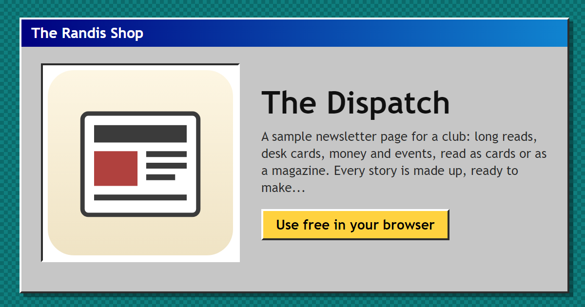

The Dispatch

A sample newsletter page for a club: long reads, desk cards, money and events, read as cards or as a magazine. Every story is made up, ready to make your own.
Made with Randis UDS, a free desktop app that builds the tools you describe.